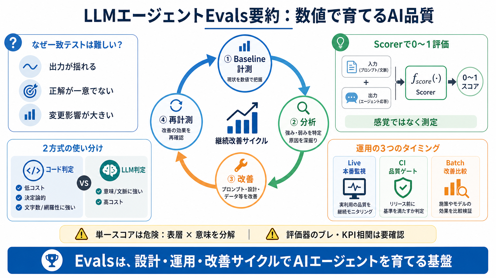

AI Agentの評価指標まとめ
LLM Agentの評価指標のサーベイに関する先行の取り組みとして，Yehudaiらの"Survey on Evaluation of LLM-based Agents"が挙げられます．こちらはよくまとまっていたので参考にさせていただきまし…

数値で育てる
LLMエージェントの応答品質は、感覚ではなくEvals（評価）でスコア化し、分析→改善→再計測することで継続的に上げます。
一致テストが不利
LLMは確率的で出力が揺れ、正解が一意でないうえ、プロンプトやモデル変更の影響が大きいため「期待出力と一致」で測れません。
ジャッジを作る
入力と出力からスコア（例：0〜1 / 0〜100）を返す評価関数 Scorer / Evaluator を用意し、品質を観測します。
スコアは「改善の効果」を比較可能にします（再現可能な数値）。
2方式を併用
判定を全部LLMに任せず、コードベース（低コスト・決定論的）で広く網を張り、意味判断が必要な観点だけLLMベースで補うのが定石です。
目的別に使い分け
評価は実行タイミングで目的が違います。単一方式に寄せるとコストと有効性がズレやすいです。
実装を固める
Mastraでは組み込みスコアラーと自作スコアラーを組み合わせ、観点ごとに“測れるもの”を増やしていきます。
回す手順
まずbaselineを計測し、低スコアのケースを分析して、プロンプトやルールを追加し、再計測で改善を確認します。
評価観点は分解
文字数のようなスコアは体裁や指示遵守を反映しますが、本質品質（要望の正確性）とは別になり得るため、複数スコアラーで多面的に測ります。
CIの役割
CI評価はPR前に“品質低下”を止める目的です。閾値でスコアを扱うことで、チーム内の品質を共通言語化できます。
落とし穴
LLMベース評価は“評価する側のモデル”に依存し得ます。評価のブレ・バイアス・頑健性担保の観点は、本文の範囲では深掘り不足です。
導入の結論
Evalsは、コードベースとLLMベースの併用、目的別（Live/CI/Batch）の運用、baseline→分析→改善→再計測の循環で、AIエージェントを育てる基盤になります。
参考の扱い
本スライドは、ユーザー提示文（Mastra Evalsの実装例：メール返信エージェント）に含まれる情報のみを根拠に要約しています。
LLM Agentの評価指標のサーベイに関する先行の取り組みとして，Yehudaiらの"Survey on Evaluation of LLM-based Agents"が挙げられます．こちらはよくまとまっていたので参考にさせていただきまし…
Go to list of users who liked. More than 1 year has passed since last update. # 【徹底解説】Mastra：TypeScript製AIエージェントフレームワーク.…
LLMシステムにおける評価は一度きりのQA作業ではなく、 連続ライフサイクルディシプリン.エージェントがより有能で、文脈に敏感で自律的になるにつれて、
* **出典**: (Ishii et al., 2024). * **出典**: (Hasan et al., 2021). ##### LLM-jp 評価スクリプト (1.3.0). | Llama 2 13B | 13 | base …
ドメインに特化したLLMアプリケーションは、特定の分野の複雑で細かな要件を満たす必要があるため、正確に評価するには、ドメイン専門家による定性評価が